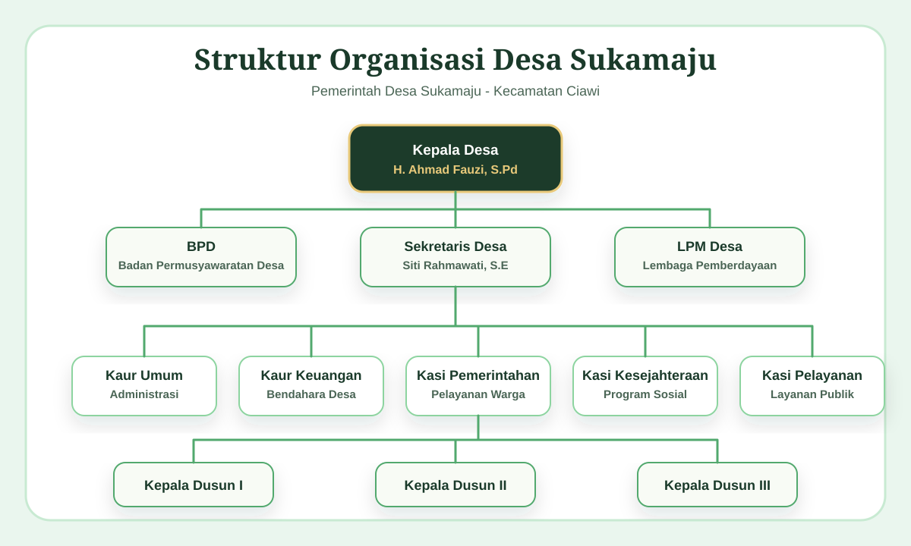

Tentang Desa
Desa di Kaki Gunung Gede Pangrango
Desa Sukamaju merupakan desa yang memiliki kekayaan alam, budaya lokal, dan potensi ekonomi berbasis pertanian serta pariwisata. Dengan semangat gotong royong, pemerintah desa terus mendorong pelayanan publik yang terbuka, pembangunan yang merata, dan pemberdayaan masyarakat yang berkelanjutan.
Visi Desa
Maju, Mandiri, Berdaya Saing
Terwujudnya Desa Sukamaju yang maju, mandiri, dan berdaya saing berbasis pertanian dan pariwisata berkelanjutan.
Misi Desa
- Meningkatkan kualitas sumber daya manusia melalui pendidikan dan pelatihan.
- Mengembangkan potensi wisata berbasis kearifan lokal.
- Membangun infrastruktur desa yang memadai dan berkelanjutan.
- Meningkatkan perekonomian masyarakat desa.
Informasi Desa
Data Umum Desa Sukamaju
Kepala Desa
H. Ahmad Fauzi, S.Pd
Luas Wilayah
420 Hektar
Jumlah RT / RW
32 RT / 8 RW
Ketinggian
800 - 1.200 mdpl
Jumlah Penduduk
8.432 Jiwa
Jam Pelayanan
Senin - Jumat, 08.00 - 15.00 WIB
Pemerintahan Desa
Bagan Struktur Organisasi
Bagan sementara menggunakan gambar dan dapat diganti dengan dokumen resmi desa.

Wilayah Desa
Peta dan Batas Desa
Informasi Batas Wilayah
Sebelah Utara
Desa Cibedug
Sebelah Timur
Desa Bojongmurni
Sebelah Selatan
Kawasan Gunung Gede Pangrango
Sebelah Barat
Desa Citapen